Introduction
After playing around with ladder logic (LL) in OpenPLC, I wanted to get a basic grip of structured text (ST). While LL is a visual method of programming PLCs, ST is a C-like language for programming PLCs, featuring well-know coding functions such as IF and WHILE.
Fortunately, OpenPLC also allows you to program PLCs using ST! There is one minor difference; with Ladder Logic, OpenPLC can simulate the circuit and get a pretty visualisation based on the LL design itself - see the images in my previous post. With ST, because there is no design, there is no pretty visualisation. However, the Debugger does give a timeline of the states of the various variables, and it can be used to force a value, so you can still simulate a circuit.
While studying ST, I noticed many of the tutorials used a piece of software called CODESYS for their programming. This is much more feature-rich than OpenPLC, and can do visualisations - it can do full HMI, with buttons and lights etc. So you can guess what a future post will be about ;-)
Structured Text
You’ll see the code below, but a few things about the language first:
- A mandatory semi-colon
;ends each statement IFis closed withEND_IF, requiresTHEN, and brackets are not used:=is used for variable assignment
Project Examples
Let’s recreate the basic designs I created with LL before in OpenPLC and get them running on the Arduino.
The physical Arduino circuit is the same as before (see here), and of course OpenPLC is installed and configured in the same way also (see here).
Two-Button Latching Circuit
The variables are the same as before:

The code is:
IF PB1 THEN
LED := TRUE;
END_IF;
IF PB2 THEN
LED := FALSE;
END_IF;
Even if you’ve never done any coding before, I’m sure this will make sense. If PB1 is pressed, set LED to TRUE (on). If PB2 is pressed, turn it off.
Note how PB1 doesn’t have to be physically held on to keep LED on; once it is pressed, LED is set to TRUE, and this stays until it is changed. With LL we needed a contact linked to the LED in parallel with the push button to latch it; in ST, it’s effectively self-latching.
To simulate this in OpenPLC, click the Simulate button and let it compile and start etc:
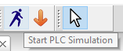
Next, click Debug on the left panel:
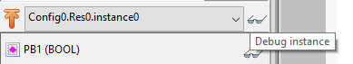
A new tab will appear, and the person will become a STOP sign:
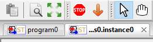
On right panel, it will change to the Debugger tab, but currently it’s empty:
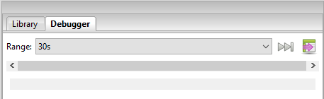
To Debug (view) the individual variables, click the glasses icon for each in the left panel:
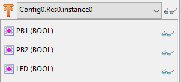
They will appear in the right panel:
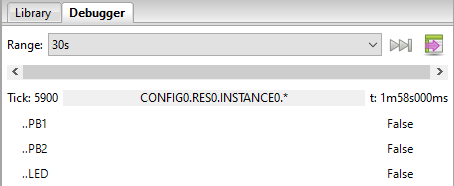
If you hover over then double-click, we get visuals!
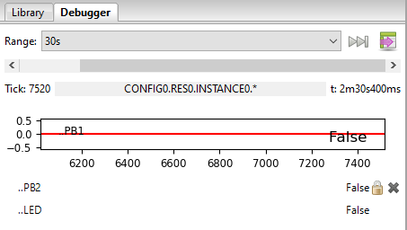
Repeat for all, and then if you hover over the visual, you can change the size. I like the middle-size one:
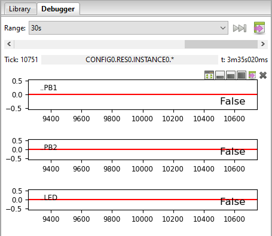
Now, if you hover over the value (in this case, False), you get a new menu:
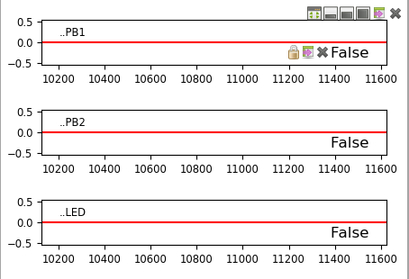
If you click the padlock, you can set the value in a new popup:
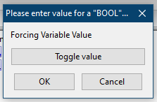
Click Toggle value then OK, and the chart will change:
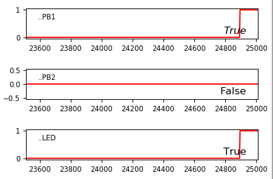
And note how this has turned the LED on!
You can force all the values all the values this way to see the behaviour. Note you’ll have to Toggle the PB1 both on and off (TRUE and FALSE) to simulate pressing and releasing the button.
If the speed is too fast, you can change the Duration setting in the Debugger. I found 30s good.
Here’s the full “routine” - PB1 TRUE (LED TRUE) then FALSE, then PB2 TRUE (LED FALSE) then FALSE:
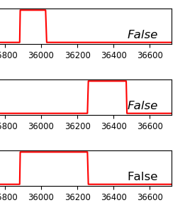
Interestingly, if you hold PB2 TRUE (i.e. keep the button pressed), LED stays FALSE even if you press PB1. This is because, in the ST, the code for PB2 comes after the code for PB1
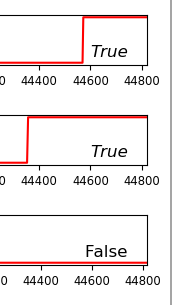
Changing the code around:
IF PB2 = TRUE THEN
LED := FALSE;
END_IF;
IF PB1 = TRUE THEN
LED := TRUE;
END_IF;
Creates the opposite effect:
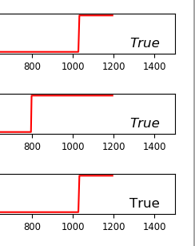
Also, if you decrease the Duration enough, you can see the ramp for the change:
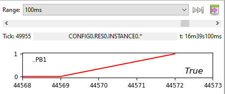
Uploading to the Arduino works in the same way as with LL and creates the same result as the Debugger. Unsurprising, really.
One-Button Latching Circuit with Emergency Stop
Next one! The initial thought is this:
IF PB1 AND NOT PB2 THEN
LED := NOT LED;
END_IF;
IF PB2 THEN
LED := FALSE;
END_IF;
The second line, quite simply, toggles the value of LED to the opposite of what it was. TRUE becomes FALSE, and FALSE becomes TRUE. If PB2 (emergency stop) is pressed, this will not happen. And whatever value LED is, if PB2 is pressed, the LED goes off.
However, this creates a strange effect:
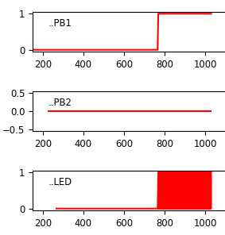
Let’s zoom in by changing the Duration:
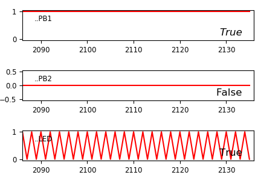
On the actual Arduino, this is the LED flashing continuously.
Why is this? Well, PLC code loops continously. This means, every loop, it sees PB1 high, and toggles LED. Not quite what we want.
The solution is using states; in particular, using a variable to log the previous state of PB1, and only do something if the previous state has changed. So, we add a new variable, PB1_PREV (note this does not relate to anything physical; it is purely a variable):
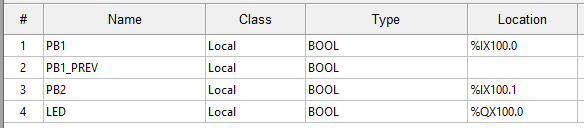
And the code looks like this:
IF PB1 AND NOT PB1_PREV AND NOT PB2 THEN
LED := NOT LED;
END_IF;
PB1_PREV := PB1;
IF PB2 THEN
LED := FALSE;
END_IF;
This is the same as before, but each loop, PB1_PREV is set to be the same as PB1, and the IF only functions if PB1 is not equal to PB1_PREV.
Here is the full functionality, both turned on and off by PB1, and an emergency stop caused by PB2 even though PB1 was still TRUE (and, if PB2 is TRUE, PB1 has no effect):
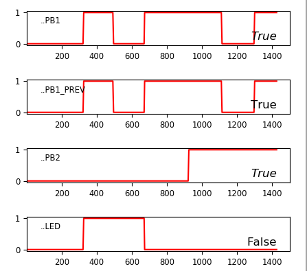
Playing with Timers
The variables:
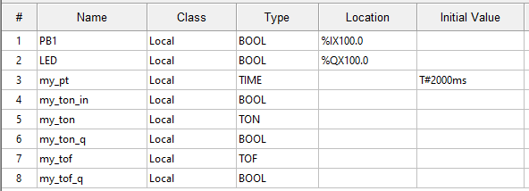
The code:
my_ton_in := PB1;
my_ton(
IN := my_ton_in,
PT := my_pt,
Q => my_ton_q);
my_tof(
IN := my_ton_q,
PT := my_pt,
Q => my_tof_q);
LED := my_tof_q;
The TON (timer on) my_ton input my_ton_in is set to be the same as PB1. PT is for the time variable, my_pt, set to T#2000ms (I’ve used the same variable, two seconds, for each timer, but of course different variables could be used). The output of my_ton is assigned to my_ton_q, which is used as the input for the TOF (timer off) my_tof. The output of this, my_tof_q, is then assigned to LED.
The functionality. Note the delay between PB1 and LED:
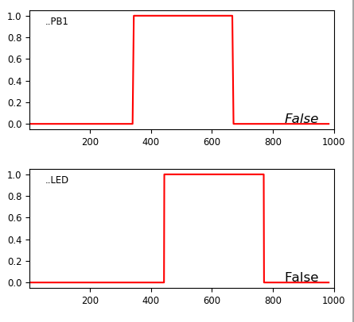
Steady(ish) State (e.g Temperature)
The variables are the same as LL (I’ve explained the strange numbers here), except the temperatures are also included up here, and I’ve used initial values to make the simulation look better:
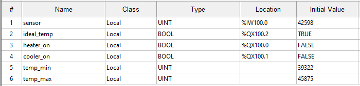
The code is actually simpler than using LL, as each comparison can change multiple variables. It’s easy to read what it does:
IF sensor >= temp_max THEN
cooler_on := TRUE;
heater_on := FALSE;
ideal_temp := FALSE;
END_IF;
IF sensor <= temp_min THEN
heater_on := TRUE;
cooler_on := FALSE;
ideal_temp := FALSE;
END_IF;
IF sensor <= temp_max AND sensor >= temp_min THEN
ideal_temp := TRUE;
END_IF;
As a reminder, here is the same functionality in LL:
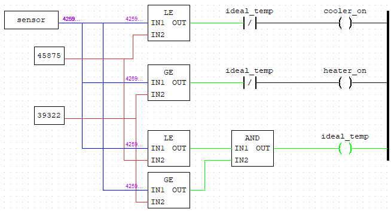
Note how, in this case, cooler_on and heater_on are de-energized using a NC contactor linked to ideal_temp, which would be similar to IF (sensor >= temp_max) AND NOT ideal_temp THEN. However, not only does this not seem to work as well in ST, it also isn’t really what we want if we think logically about the functionality. A better way, which we did in ST above, is to directly define the values of cooler_on and heater_on depending on the comparison.
As for the Debug chart:
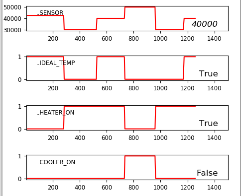
With ST, it’s very easy to take this a step further. We can keep the heater or cooler on until it hits the perfect temperature, and then stop. So, instead of potentially yo-yoing between the temp_max and temp_min, it will only increase or decrease to the perfect temperature. This involves setting a new variable, perfect_temp, and let’s say set to 42598 (the mid-point). The new code looks like:
IF sensor >= temp_max THEN
cooler_on := TRUE;
heater_on := FALSE;
ideal_temp := FALSE;
END_IF;
IF sensor <= temp_min THEN
heater_on := TRUE;
cooler_on := FALSE;
ideal_temp := FALSE;
END_IF;
IF sensor <= temp_max AND sensor >= temp_min THEN
ideal_temp := TRUE;
IF sensor < perfect_temp THEN
heater_on := TRUE;
cooler_on := FALSE;
END_IF;
IF sensor > perfect_temp THEN
cooler_on := TRUE;
heater_on := FALSE;
END_IF;
IF sensor = perfect_temp THEN
cooler_on := FALSE;
heater_on := FALSE;
END_IF;
END_IF;
And the output:
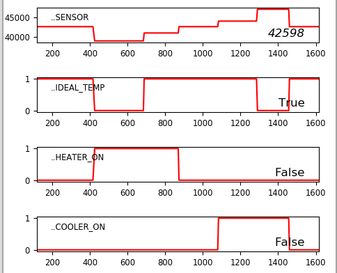
Comments?
Feel free to comment on my LinkedIn post.